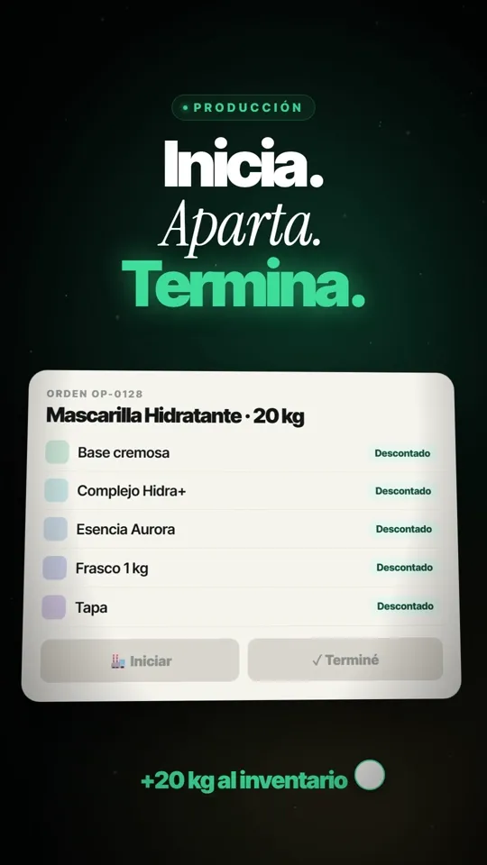
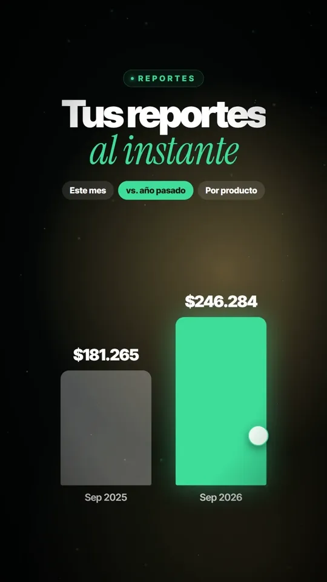

Un ERP propio para la operación de Fabricarte
Fabricarte fabrica y vende productos capilares profesionales en Querétaro. La operación necesitaba ver en un solo lugar qué se produce, qué hay en inventario y qué se vende.
01Problema inicial
Inventarios, ventas y procesos administrativos se controlaban por separado. Era difícil saber con certeza las existencias reales y el estado de cada operación.
02ERP propio y Odoo: dos cosas distintas
Odoo
Lo uso a nivel funcional como usuario del sistema. Me sirvió para entender cómo se organiza un ERP: módulos, flujos y registros.
ERP Fabricarte
Es un sistema propio, desarrollado con asistencia de IA y adaptado a los procesos específicos del negocio.
03Módulos y cómo se conectan
Punto de venta
Registra la venta, calcula el costo, descuenta inventario y genera una nota de venta en PDF.
Inventario
Existencias y valor del inventario, con alerta cuando un producto llega a su mínimo.
Producción
Órdenes de producción: al iniciar descuenta los insumos y al terminar suma el producto al inventario.
Reportes y clientes
Ventas del mes, comparativo contra el año anterior, ventas por producto y clientes por ciudad.
Se instala como aplicación en Android para usarla desde el celular.
04Operación completa con datos de demostración
Cada operación actualiza a las demás; no hay que capturar lo mismo dos veces:
05Una regla de negocio explicada
Una orden de producción reserva y descuenta cada insumo de la fórmula (base, complejos, esencia, envase y tapa). Solo al marcarla como terminada entra el producto final al inventario. Así el inventario refleja lo que realmente existe en cada momento.


Video de presentación animado con datos de ejemplo; no contiene información real de clientes.